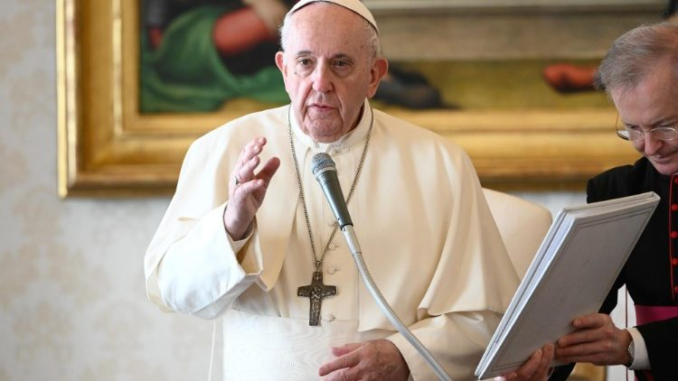

Sacrament as a rite in a christian life

A sacrament is a Christian rite recognized as of particular importance and significance. There are various views on the existence and meaning of such rites. Many Christians consider the sacraments to be a visible symbol of the reality of God, as well as a channel for God's grace.
Celebrating The Life Of MARY SALOME OPUDO || 21st October 2021
Mama Mary Salome OPUDO, mother to Rev. Fr. John Philip ODERO laid to rest in Nyangina Village, Tonga Parish
Pope at Audience: Love is mystical root of believer’s life
At the General Audience on Wednesday, Pope Francis turned his gaze to the prayer life of the early Church, as he continued his catechesis on prayer. “The Church’s first steps in the world were interspersed with prayer,” the Pope said. The writings of the New Testament, and especially the Acts of the Apostles, give us “the image of an active Church on the move, yet which gathered in prayer finds the basis and impulse for missionary action.”